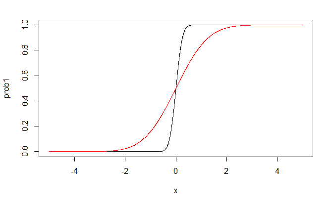
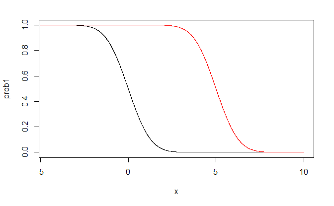
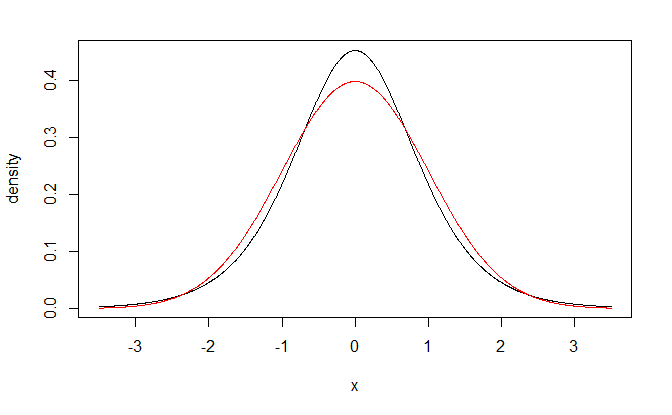
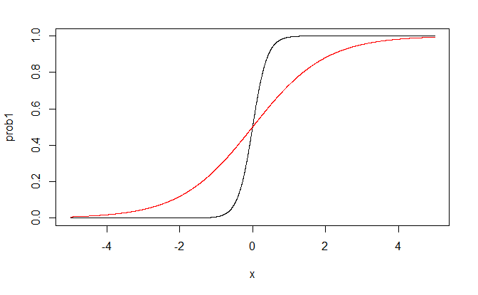
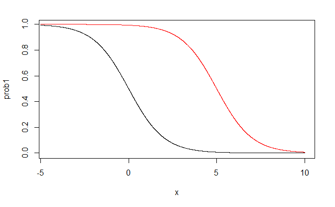

23 Introduction to Logistic Regression
“If all you have is a hammer, everything looks like a nail.” - Bernard Baruch
23.1 Binary Response Variable
In a variety of regression applications, the response variable of interest has only two possible qualitative outcomes, and therefore can be represented by a binary indicator variable taking on values 0 and 1.
A binary response variable is said to involve binary responses or dichotomous responses.
We consider first the meaning of the response function when the outcome variable is binary, and then we take up some special problems that arise with this type of response variable.
23.1.1 Response Function Meaning
Consider the simple linear regression model \[ \begin{align*} y_{i} & =\beta_{0}+\beta_{1}x_{i}+\varepsilon_{i}\qquad y_{i}=0,1 \end{align*} \] where the outcome \(y_{i}\) is binary taking on the value of either 0 or 1.
The expected response $E$ has a special meaning in this case.
Since \(E\left[ \varepsilon_{i}\right] =0\), we have \[ \begin{align*} E\left[ y_{i}\right] & =\beta_{0}+\beta_{1}x_{i} \end{align*} \]
Consider \(y_{i}\) to be a Bernoulli random variable for which we can state the probability distribution as follows \[ \begin{align*} y_{i} & \quad\textbf{ Probability}\\ 1 & \quad P\left(y_{i}=1\right)={\pi_{i}}\\ 0 & \quad P\left(y_{i}=0\right)={1-\pi_{i}} \end{align*} \]
Thus, \(\pi_{i}\) is the probability that \(y_{i}=1\) and \(1-\pi_{i}\) is the probability that \(y_{i}=0\)
By the definition of a discrete random variable, we have \[ {\begin{align*} E\left[ y_{i}\right] & =1\left(\pi_{i}\right)+0\left(1-\pi_{i}\right)\\ & =\pi_{i}\\ & =P\left(y_{i}=1\right) \end{align*}} \]
Thus, \[ {\begin{align*} E\left[ y_{i}\right] & =\beta_{0}+\beta_{1}x_{i}\\ & =\pi_{i} \end{align*}} \]
The mean response \(E\{y_i\}\) as given by the response function is therefore simply the probability that \(y_i = 1\) when the level of the predictor variable is \(x_i\).
This interpretation of the mean response applies whether the response function is a simple linear one, as here, or a complex multiple regression one.
The mean response, when the outcome variable is a 0, 1 indicator variable, always represents the probability that \(Y = 1\) for the given levels of the predictor variables.
23.1.2 Problems when response is binary
Special problems arise, unfortunately, when the response variable is an indicator variable. We consider three of these now, using a simple linear regression model as an illustration.
Nonnormal error terms: For a binary 0, 1 response variable, each error term can take on only two values: \[ \begin{align*} \text{When }y_{i}=1: & \quad\varepsilon_{i}=1-\beta_{0}-\beta_{1}x_{i}\\ \text{When }y_{i}=0: & \quad\varepsilon_{i}=0-\beta_{0}-\beta_{1}x_{i} \end{align*} \]
Clearly, normal error regression model, which assumes that the \(\varepsilon_i\) are normally distributed, is not appropriate.
Nonconstant Error Variance: Another problem with the error terms is that they do not have equal variances when the response variable is an indicator variable.
To see this, note that \[ \begin{align*} Var[\varepsilon_i] = (\beta_{0}+\beta_{1}x_{i})(1-\beta_{0}-\beta_{1}x_{i}) \end{align*} \]
Note that \(Var\{\varepsilon_i\}\) depends on \(x_i\). Hence, the error variances will differ at different levels of X, and ordinary least squares will no longer be optimal.
Constraints one Response Function: Since the response function represents probabilities when the outcome variable is a 0, 1 indicator variable, the mean responses should be constrained as follows: \[ 0\le E\{Y\}=\pi \le 1 \]
The difficulties created by the need for the restriction on the response function are the most serious.
One could use weighted least squares to handle the problem of unequal error variances.
In addition, with large sample sizes the method of least squares provides estimators that are asymptotically normal under quite general conditions, even if the distribution of the error terms is far from normal.
However, the constraint on the mean responses to fall between 0 and 1 frequently will rule out a linear response function.
23.2 Sigmoidal Response Functions
In this section, we will examine two response functions for modeling binary responses.
These functions are bounded between 0 and 1, have a characteristic sigmoidal- or S-shape, and approach 0 and 1 asymptotically.
These functions arise naturally when the binary response variable results from a zero-one recoding (or dichotomization) of an underlying continuous response variable, and they are often appropriate for discrete binary responses as well.
23.2.1 Probit Mean Response Function
Consider a health researcher studying the effect of a mother’s use of alcohol (\(x\) -an index of degree of alcohol use during pregnancy) on the duration of her pregnancy (\(y^C\)).
Here we use the superscript \(c\) to emphasize that the response variable, pregnancy duration, is a continuous response.
This can be represented by a simple linear regression model: \[ y^C_i = \beta_0^c+\beta_1^c x_i +\varepsilon_i^c \] and we will assume that \(\varepsilon^c_i\) is normally distributed with mean zero and variance \(\sigma^2_c\).
If the continuous response variable, pregnancy duration, were available, we might proceed with the usual simple linear regression analysis. However, in this instance, researchers coded each pregnancy duration as preterm or full term using the following rule: \[ \begin{align*} y_{i} & =\begin{cases} 1 & \text{ if }y_{i}^{c}\le38\text{ weeks (preterm)}\\ 0 & \text{ if }y_{i}^{c}>38\text{ weeks (full term)} \end{cases} \end{align*} \]
It follows then that \[ \begin{align*} P\left(y_{i}=1\right)=\pi_{i} & =P\left(y_{i}^{c}\le38\right)\\ & =P\left(\beta_{0}^{c}+\beta_{1}^{c}x_{i}+\varepsilon_{i}^{c}\le38\right)\\ & =P\left(\varepsilon_{i}^{c}\le38-\beta_{0}^{c}-\beta_{1}^{c}x_{i}\right)\\ & =P\left(\frac{\varepsilon_{i}^{c}}{\sigma_{c}}\le\frac{38-\beta_{0}^{c}}{\sigma_{c}}-\frac{\beta_{1}^{c}}{\sigma_{c}}x_{i}\right)\\ & =P\left(Z\le\beta_{0}^{*}+\beta_{1}^{*}x_{i}\right) \end{align*} \] where \[ \begin{align*} \beta_{0}^{c} & =\frac{38-\beta_{0}^{c}}{\sigma_{c}}\\ \beta_{1}^{c} & =-\frac{\beta_{1}^{c}}{\sigma_{c}}\\ Z & =\frac{\varepsilon_{i}^{c}}{\sigma_{c}}. \end{align*} \]
Note that \(Z\) follows a standard normal distribution.
If we let \(P\left(Z\le z\right)=\Phi\left(z\right)\), we have \[ \begin{align*} P\left(y_{i}=1\right) & =\Phi\left(\beta_{0}^{*}+\beta_{1}^{*}x_{i}\right) \end{align*} \]
From this we have what is known as the probit mean response function \[ \begin{align*} E\left[ y_{i}\right] & =\pi_{i}=\Phi\left(\beta_{0}^{*}+\beta_{1}^{*}x_{i}\right) \end{align*} \]
The inverse function \(\Phi^{-1}\) of the standard normal cumulative distribution function is sometimes called the probit transformation.
We solve for the linear predictor \(\beta_{0}^{*}+\beta_{1}^{*}x_{i}\) by applying the probit transformation to both sides of the expression: \[ \begin{align*} \Phi^{-1}\left(\pi_{i}\right) & =\pi_{i}^{\prime}=\beta_{0}^{*}+\beta_{1}^{*}x_{i} \end{align*} \]
The resulting expression \(\pi_{i}^{\prime}=\beta_{0}^{*}+\beta_{1}^{*}x_{i}\) is called the probit response function, or more generally, the linear predictor.
Example: \(\beta_0^*=0\)}
black line: \(\beta_1^*=5\)
red line: \(\beta_1^*=1\)

Example: \(\beta_1^*=-1\)}
black line: \(\beta_0^*=0\)
red line: \(\beta_0^*=5\)

23.3 Logistic Mean Response Function
We have seen that the assumption of normally distributed errors for the underlying continuous response variable led to the use of the standard normal cumulative distribution function, \(\Phi\) to model \(\pi_i\).
An alternative error distribution that is very similar to the normal distribution is the logistic distribution.
Plots of the standard normal density function and the logistic density function, each with mean zero and variance one are nearly indistinguishable, although the logistic distribution has slightly heavier tails.

Note the cumulative distribution function of a logistic random variable \(\varepsilon_{L}\) having mean 0 and standard deviation \(\sigma=\pi/\sqrt{3}\) is: \[ \begin{align*} F_{L}\left(\varepsilon_{L}\right) & =\frac{\exp\left(\varepsilon_{L}\right)}{1+\exp\left(\varepsilon_{L}\right)} \end{align*} \]
Suppose now that \(\varepsilon_{i}^{c}\) has a logistic distribution with mean 0 and standard deviation \(\sigma_{c}\). Then we have \[ \begin{align*} P\left(y_{i}=1\right) & =P\left(\frac{\varepsilon_{i}^{c}}{\sigma_{c}}\le\beta_{0}^{*}+\beta_{1}^{*}x_{1}\right) \end{align*} \] where \(\varepsilon_{i}^{c}/\sigma_{c}\) follows a logistic distribution with mean zero and standard deviation one.
Multiplying both sides of the inequality inside the probability statement on the right by \(\pi/\sqrt{3}\) gives us \[ \begin{align*} P\left(y_{i}=1\right)=\pi_{i} & =P\left(\frac{\pi}{\sqrt{3}}\frac{\varepsilon_{i}^{c}}{\sigma_{c}}\le\frac{\pi}{\sqrt{3}}\beta_{0}^{*}+\frac{\pi}{\sqrt{3}}\beta_{1}^{*}x_{i}\right)\\ & =P\left(\varepsilon_{L}\le\beta_{0}+\beta_{1}x_{i}\right)\\ & =F_{L}\left(\beta_{0}+\beta_{1}x_{i}\right)\\ & =\frac{\exp\left(\beta_{0}+\beta_{1}x_{i}\right)}{1+\exp\left(\beta_{0}+\beta_{1}x_{i}\right)} \end{align*} \] where \[ \begin{align*} \beta_{0} & =\frac{\pi}{\sqrt{3}}\beta_{0}^{*}\\ \beta_{1} & =\frac{\pi}{\sqrt{3}}\beta_{1}^{*} \end{align*} \] denote the logistic regression parameters.
To summarize, the logistic mean response function is \[ \begin{align*} E\left[ y_{i}\right] & =\pi_{i}\\ & =F_{L}\left(\beta_{0}+\beta_{1}x_{i}\right)\\ & =\frac{\exp\left(\beta_{0}+\beta_{1}x_{i}\right)}{1+\exp\left(\beta_{0}+\beta_{1}x_{i}\right)}\\ & =\frac{1}{1+\exp\left(-\beta_{0}-\beta_{1}x_{i}\right)} \end{align*} \]
Applying the inverse of the cumulative distribution function \(F_{L}\) gives \[ \begin{align*} F_{L}^{-1}\left(\pi_{i}\right) & =\beta_{0}+\beta_{1}x_{1}=\pi_{i}^{\prime} \end{align*} \]
\(F_{L}^{-1}\left(\pi_{i}\right)\) is called the logit transformation and is given by \[ \begin{align*} F_{L}^{-1}\left(\pi_{i}\right) & =\log\left(\frac{\pi_{i}}{1-\pi_{i}}\right) \end{align*} \] where the ratio \(\pi_{i}/\left(1-\pi_{i}\right)\) is called the odds} ratio}.
Example: \(\beta_0^*=0\)
black line: \(\beta_1^*=5\)
red line: \(\beta_1^*=1\)

Example: \(\beta_1^*=-1\)
black line: \(\beta_0^*=0\)
red line: \(\beta_0^*=5\)

23.4 Interpretation of the Coefficients
The interpretation of the estimated regression coefficient \(\hat{\beta}_1\) in the fitted logistic response function is not the straightforward interpretation of the slope in a linear regression model.
The reason is that the effect of a unit increase in \(x\) varies for the logistic regression model according to the location of the starting point on the \(x\) scale.
An interpretation of \(\hat{\beta}_1\) is found in the property of the fitted logistic function that the estimated odds \[ \frac{\hat{\pi}}{1-\hat{\pi}} \] are multiplied by \[ \exp(\hat{\beta}_1) \] for any unit increase in \(x\).
To see this, we consider the value of the fitted logit response function at \(X = x_j\); \[ \hat{\pi}^\prime (x_j)={\hat{\beta}_0+\hat{\beta}_1 x_j} \]
The notation \(\hat{\pi}^\prime (x_j)\) indicates specifically the \(x\) level associated with the fitted value.
We also consider the value of the fitted logit response function at \(X = x_j + 1\); \[ \hat{\pi}^\prime (x_j+1)={\hat{\beta}_0+\hat{\beta}_1( x_j+1)} \] The difference between the two fitted values is simply \[ {\begin{align*} \hat{\pi}^\prime (x_j+1)-\hat{\pi}^\prime (x_j)& = \hat{\beta}_0+\hat{\beta}_1( x_j+1) - \hat{\beta}_0-\hat{\beta}_1 x_j \\ & = \hat{\beta}_1 \end{align*}} \]
Now \(\hat{\pi}^\prime (x_j)\) is the logarithm of the estimated odds when \(X=x_j\); we shall denote it by \(\ln(\text{odds}_1)\).
Similarly, \(\hat{\pi}^\prime (x_j+1)\) is the logarithm of the estimated odds when \(X=x_j+1\); we shall denote it by \(\ln(\text{odds}_2)\).
Hence, the difference between the two fitted logit response values can be expressed as follows: \[ \begin{align*} \ln(\text{odds}_2)-\ln(\text{odds}_1) = \ln\left(\frac{\text{odds}_2}{\text{odds}_1}\right) = \hat{\beta}_1 \end{align*} \]
Taking antilogs (exponentials) of each side, we see that the estimated ratio of the odds, called the odds ratio, \(\hat{OR}\), is \[ \hat{OR} = \frac{\text{odds}_2}{\text{odds}_1}=\exp(\hat{\beta}_1) \]